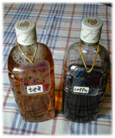

■ママレード、ふつふつ
ストーブの上で、夏みかんが煮えている。もうすぐママレードができる。
数日前、友だちが持ってきてくれたまだ青い夏みかんを、３回茹でこぼした末、果汁と砂糖を加えてアラジンのストーブの上に置いた。友だちというのは、小学校２年生の男の子で、彼が住む社宅の近くにある木によじ登って夏みかんをとったそうだ。子どもって、食べられるものをみつけたり、獲ったりするのが好きだ。夏みかんを腕に抱えた彼、ヒデト君も鼻をふくらませて「食べられるよね、食べられるよね」と言った。
「うん、もちろん」
そういえば、私も木に登り、夏みかんをとったことがある。私の場合は、すでにいい大人になっていたが、友人のマンションの玄関前の大木に夏みかんがたわわに実っているのが気になって、気になって。
「あれは、みんなで食べるの？」
「排気ガスがついてるんじゃないの？ 食べられやしないでしょ。いつの間にか落ちて、なくなっているわよ」
そんなあ。夏みかんに生まれて、せっかく実っても食べてもらえず「いつしかなくなっている」なんて言われる果実の身にもなってよ、と思う。管理人さんにお許しをいただいて、木にしがみつき、私は２０個ほども夏みかんをもいだのだ。登ってみて驚いた。夏みかんの木の枝にはとがった長いトゲがあった。義侠心に燃え夏みかんの身になった私は、腕にも脛にも切り傷をたくさんつくってしまった。その夏みかんを一生けんめい洗って、皮をむいてきざみ、茹でこぼし、ママレードをこしらえた。あちらこちら、うっすら血がにじんでいる傷をさすりさすり、「こうなったら命がけだわ」とつぶやいたりしながら大鍋で煮たママレードは……。これが驚くなかれ、「なーんて美味しいの？」という代物だった。たまにはあるんだな、私にもこんなことが。
ヒデト君が頬を真っ赤に染めるほどの勢いで、夏みかんを持ってきてくれたときも、よしっと腕をまくった。まくっていま、仕事場のストーブの上で、ふつふつと音をたてるところまできたわけだ。原稿の締切が重なっていたので、皮を刻むところだけはしょらせてもらった。フードプロセッサーをとり出し、ガーッと細かくしてしまった。
「あらあら」
すぐにはしょったり、いんちきをするくせに、そういうことをどこかで後ろめたく思う癖だけいつまでも抜けない。それで、しょっちゅう「あらあら」などという、挨拶ともまじないともつかぬことばを口にしている。しかし「あらあら」ののちは、３回茹でこぼして実と砂糖を加え、これでもう３０分近く煮つづけている。鍋のなかのふつふつふつという音と、甘くすっぱい香りの両方をたのしみながら、それにしてもヒデト君というのは愉快な子だと、考えた。夏みかんを自分の家に持って帰ろうと走りはじめたが、ふと思い直して私のところにやってきたのにちがいない。このまま食べればすっぱくて顔がしわくちゃになってしまうかもしれない夏みかんを、ヘンテコな食べものに変えるにはあのヘンテコなおばさん！ そんなふうに思い出してくれたのだろう。ママレードをつくるたびに命をかけていたのでは、身がもたないが、いまも私はヒデト君のよろこぶ顔を胸に描いて力んでいる。
保存がきいて食べつづけることのできるもの、すぐには食べられないけれどある期間を隔てて食べごろをむかえるもの、そういう食べ物をつくるのが私は好きだ。つくっているときには、少し先の自分や、それを食べる誰かさんに便りをするような気持ちになる。食べるときには、きっとつくったときのことを思い出す。ママレードの瓶のふたをとるたびに、ヒデト君の「食べられるよね」という健気な声、夏みかんで遊ぼうとしたいちご（猫）の仕草、ストーブに鍋をかけときどき木杓子でかきまぜながら書いたこの原稿のことなんかが浮かんでくるだろう。いまの元気、この静かなしあわせが、ママレードを食べつづける間、手のなかにありますように。
厨には、そう、どんな厨にも、実はそういうささやかな願いがこもっている。
〈みなさま、どうぞ佳い年をお迎えください〉

■夏みかんのママレード
夏みかん（はっさく、甘夏、いよかん、レモンなどでもそれぞれ美味しいママレードができる）
砂糖………………………夏みかんの６〜９割（仕上がり近く、ハチミツを混ぜてもいい）
・夏みかんはよくよく洗う。
・皮をむいて、それをできるだけ薄く切って水に放ち、よく洗う。
・皮はたっぷりの湯で茹でて、煮立ったらざるに上げて洗う。これを２〜３回くり返す。
・実は薄皮をとって、ほぐしておく。
・ほうろうの鍋に皮と実を合わせて入れ、砂糖を少しずつ加えて中火で煮る（鍋のふたは しない）。
・２０〜４０分ほど煮ればでき上がり。
※夏みかんの種類によっては、少量の水を加えた方がいい場合がある。
